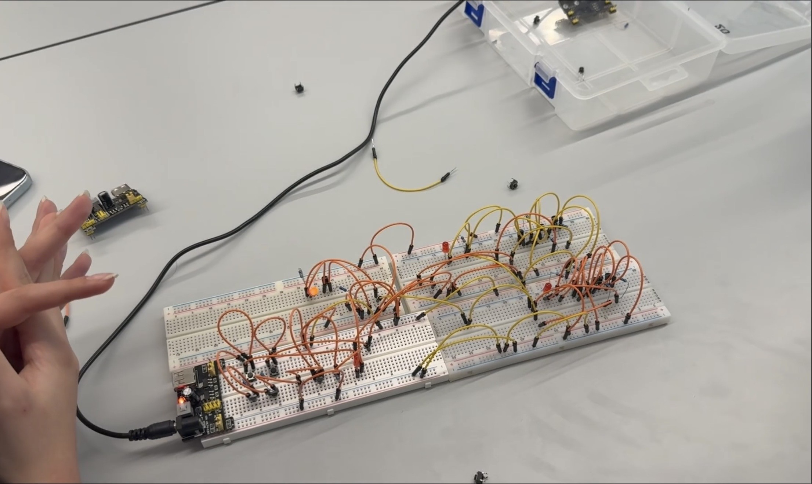
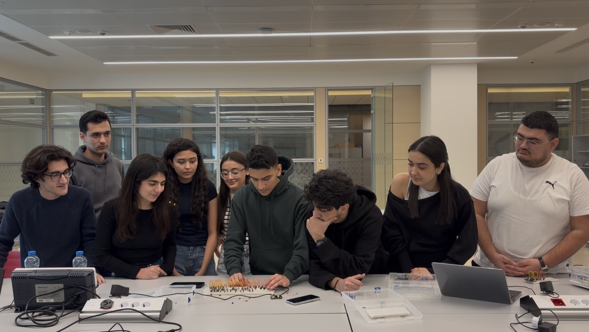
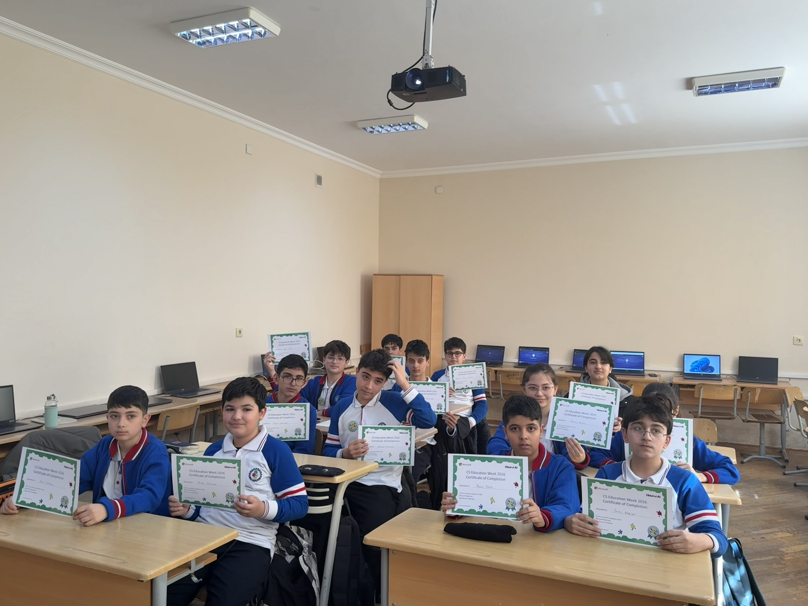
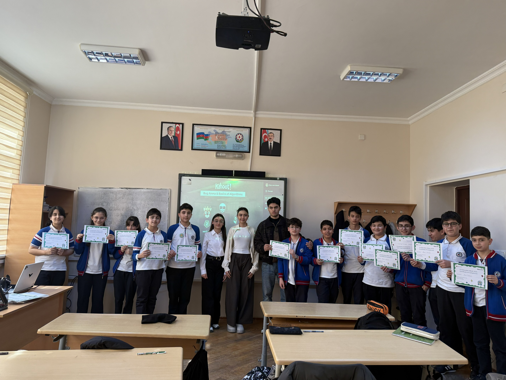
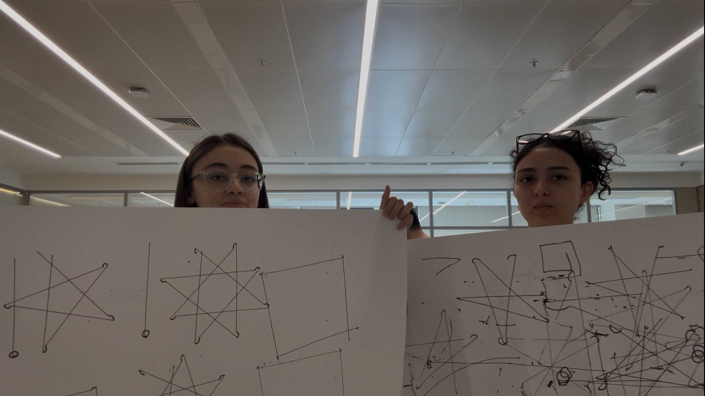
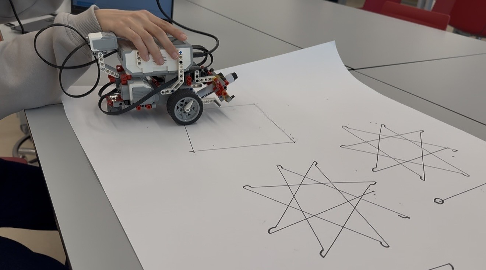

This project was our first project for the SITE - 1101 course. First, we visited the university lab three times. At the beginning, my team and I built basic logic gates such as NOT, AND, and OR. After we completed and understood the concepts, we moved on to more complex circuits. We also combined our breadboards with other teams to build OR and XOR gates. It was an interesting and useful project for us. By participating in this project, we learned how logic gates actually work. From my point of view, projects that require lab visits are more interesting than others.


For Project 2, we visited the Physics, Mathematics, and Informatics Lyceum and taught basic coding to 7th-grade students. We used PowerPoint presentations provided by our instructor and the Microsoft MakeCode (Bug Arena) platform. We enjoyed recording the video and sharing our knowledge with the students. The students also asked us different questions about our experience at ADA University. I would say that the most interesting part of this project was the video editing process, as I really enjoyed working on it. However, I also think this was the most tiring project. Despite the students being interested in the topic, supervising and helping them one-by-one was sometimes challenging for us.


In our third and final team project, we worked on a robotics project where we constructed a LEGO robot. After the construction, we wrote a program to make the robot draw different figures. In my opinion, the most interesting part of this project was the coding process. When our robot successfully drew an 8-pointed star, we were really proud of ourselves. It was not only the most complicated but also the most interesting project for me.

